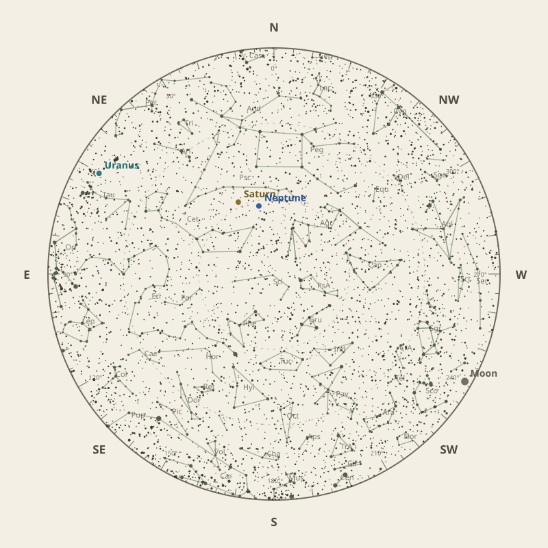

← Annual almanac


North is at the top; east is at the left. Solar System objects shown are above the horizon at 10 pm.
Monthly field almanac
October 2026
Saturn reaches opposition on 4 Oct 2026 and is highest around 11:30 pm.
- New Moon
- 11 Oct Darkest skies
- Full Moon
- 26 Oct Brightest skies
- Best dark window
- 7 Oct 10h 40m
Current conditions
Checking the sky near South East Queensland, Australia…
Sky chart: 15 Oct 2026, 10 pm
South East Queensland, Australia local time.
Show static monthly chart

Night planner
Choose a date to see astronomical darkness, Moon interference, Galactic Centre visibility, and planet altitudes and times.
Best low-Moon dark periods this month
- 6:16 pm–4:56 am10h 40m · 22% Moon
- 6:16 pm–4:55 am10h 38m · 14% Moon
- 6:17 pm–4:54 am10h 37m · 8% Moon


Galactic Centre sessions
- 6:12 pm–10:22 pm4h 10m · core to 73°
- 6:13 pm–10:13 pm4h 00m · core to 71°
- 6:14 pm–10:14 pm4h 00m · core to 70°
Events
- HIP 21988 lunar occultation12:35 am to 12:54 am; Moon at 17° altitude for the first listed contact.
- Mercury greatest eastern elongationEvening sky; 25.2° from the Sun.
- Comet 2P45° altitude; magnitude 16.9.
October highlights
- Occultations
HIP 17181 lunar occultation
12:33 am to 1:22 am; Moon at 27° altitude for the first listed contact.
- Milky Way
Milky Way core window
4h 10m with 73° altitude.
- Comets
Comet 10P
84° altitude; magnitude 13.8.
- Planetary events
Saturn opposition
Visible for most of the night.
- Meteor showers
Orionids
Peak conditions: 71% Moon illumination; 47° altitude predawn.


Moon phases
82%
14%
20%
80%
92%
For faint deep-sky objects, observe when the Moon is below the horizon or weakly illuminated. For lunar relief, observe near the terminator; full Moon is best suited to ray systems and albedo features.
Download Moon phase CSV →

Planet visibility
Evening
- Neptune28 Oct · 9:30 pm63° · Excellent
- Venus1 Oct · 6:30 pm21° · Fair
- Mercury15 Oct · 6:30 pm17° · Fair
 Neptune
Neptune Venus
Venus Mercury
MercuryOvernight
- Saturn29 Oct · 10:00 pm61° · Excellent
- Uranus30 Oct · 1:30 am42° · Good
 Saturn
Saturn Uranus
UranusPredawn
- Mars31 Oct · 4:30 am36° · Good
- Jupiter31 Oct · 4:30 am35° · Good
 Mars
Mars Jupiter
Jupiter